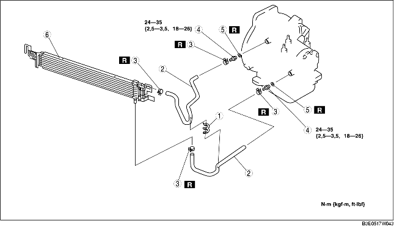

1. Déposer le couvercle de la batterie. (voir la section DEPOSE/REPOSE DE BATTERIE [ZJ, Z6].)
2. Débrancher le câble négatif de la batterie.
3. Déposer la calandre de radiateur. (4SD)
4. Déposer le cache inférieur.
5. Vidanger l'ATF dans un récipient. (voir la section REMPLACEMENT DE LIQUIDE DE BOITE-PONT AUTOMATIQUE (ATF).)
6. Déposer la fixation de radiateur.
7. Déposer le composant du ventilateur. (voir la section Note sur la repose de composant de ventilateur de refroidissement.)
8. Déposer la fixation en caoutchouc u radiateur de l'orifice de repose de fixation. (voir la section Note sur la dépose de radiateur.)
9. Déposer les différents éléments selon l'ordre indiqué dans le tableau.
10. Pour la repose, suivre l'ordre inverse de la dépose.
11. Ajouter de l'ATF jusqu'au niveau spécifié. (voir la section REMPLACEMENT DE LIQUIDE DE BOITE-PONT AUTOMATIQUE (ATF).)
12. Inspecter s'il y a des fuites d'huile en provenance des tuyaux d'huile et des flexibles d'huile.
13. Inspecter le liquide de refroidissement en provenance des flexibles.
14. Inspecter le niveau et l'état de l'ATF. (voir la section INSPECTION DE LIQUIDE POUR BOITE-PONT AUTOMATIQUE (ATF).)
15. Effectuer le test de pression de canalisation. (voir la section ESSAI DU SYSTEME MECANIQUE.)
16. Effectuer un essai sur route. (voir la section TEST SUR ROUTE.)

.
|
1
|
Attache de flexible
|
|
2
|
Flexible d'huile
(voir la section Note sur la repose de collier de flexible, flexible d'huile.)
|
|
3
|
Collier de flexible
(voir la section Note sur la repose de collier de flexible, flexible d'huile.)
|
|
4
|
Boulon de connecteur
|
|
5
|
Joint torique
|
|
6
|
Refroidisseur d'huile
(voir la section Note sur la repose de refroidisseur d'huile.)
|
1. Le rinçage du refroidisseur d'huile de boîte-pont automatique doit être effectué chaque fois que la boîte-pont est déposée pour une révision car le liquide existant peut être contaminé et pour éviter la contamination du liquide neuf.
2. Suivre les instructions de la notice du fabricant pour l'opération de rinçage.
3. Insérer la languette du refroidisseur d'huile dans le radiateur.
1. Appliquer de l'air comprimé via l'ouverture côté refroidisseur, et chasser toute trace de poussière résiduelle et de corps étranger des tuyaux du refroidisseur. L'air comprimé doit être appliqué pendant au moins une minute.
2. Aligner les repères, et faire coulisser le flexible d'huile sur le tuyau d'huile jusqu'à ce qu'il soit complètement en place, comme indiqué.
3. Reposer le collier de flexible neuf sur le flexible.
4. Vérifier que le collier de flexible n'interfère pas avec d'autres pièces.